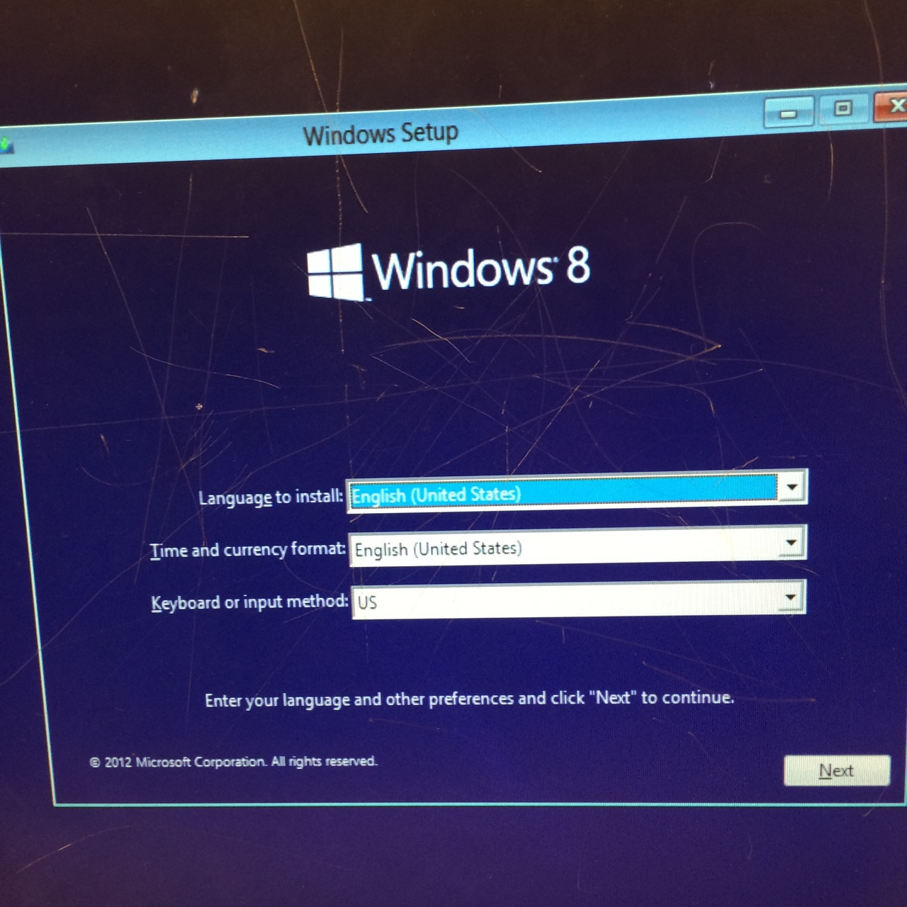
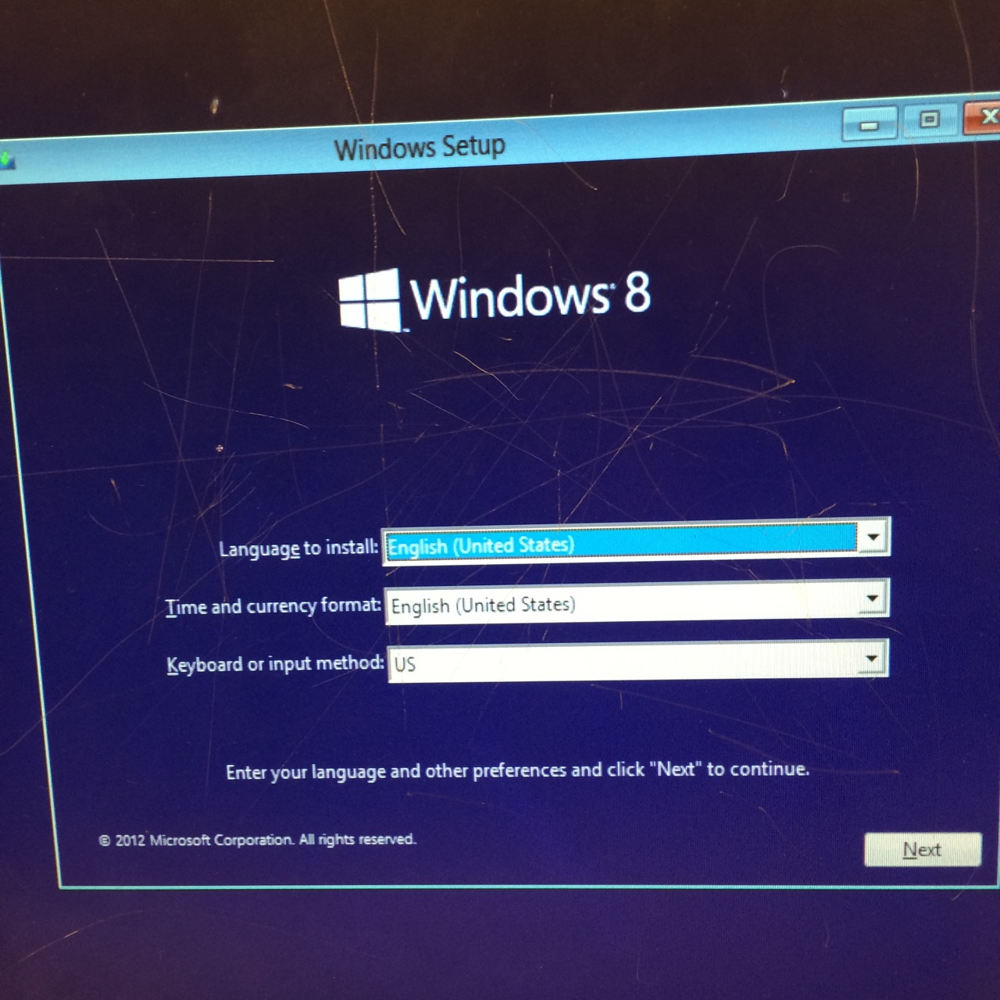

Already built your new PC? Great! No? What are you doing! Go to the Building Page! Are you done NOW? Good. Wait? You didn't actually build a PC? You bought one? You already have one? That's fine too. When setting up a brand new PC, make sure you've got everything you need. You already have the PC itslef, but you also need a mouse, keyboard, monitor(s), and a printer. Once you have everything you need, it's time to get started.
Depending on what version of Windows you are using, a mandatory setup will automatically begin once the computer is turned on for the first time. If you are using Windows 7 or Windows 8, a popup will come on regularly asking to upgrade to Windows 10. Upgrading to Windows 10 is highly reccomended becasue it is currently the newest version of Windows. If you dont want to upgrade that's fine, but Windows 10 will be used for these instructions. You will proabably be asked to make a profile, set up an account, set the time, etc.
 

First, you want to run Windows Update a couple of times just to be sure you've got the latest version. Then, you might want to update some of your drivers. This step isn't for everyone and is optional. Now is time for the personalization. Install your favorite browser such as Google Chrome, Mozilla Firefox, or Opera. If you want to stick with Microsoft Edge or Internet Explorer that's also fine. Finally you should go to the settings page in Windows 10 and set everything up how you like.
Got your browser? Nice job. Now is time for some security and less annoying ads. You can install Adblock Plus to get rid of most of those annoying browser ads. For PC security and anti-virus/ anti-maliware, Windows Defender comes pre installed on most computers. You can also use Norton Anit- Virus, but that's a paid service and most people dislike it even though a free trial comes included on most computers. If you want to install some of the most popular software for yourself though, that's a different story. Ninite is a free service that automatically installs the most popular applications that suit you for free. It's pretty easy and simple, but only includes a select few of the essential applications. But of course, not all computers come with everything you want. Actually, they come with a lot of bloatware or crapware. Bloatware is preinstalled applications that come with most PCs. Most people don't want bloatware because they just take up space and are useless. You can use Revo Uninstaller to get rid of that nasty crapware easily and quickly.
Now that the essentials are done, you might want to transfer over your old work from an old PC. You can upload the a little bit at a time using OneDrive, an official Microsoft tool used for uploading work into the cloud with a maximum storage space of 5GB. Or you could just take the easier route and use a Flash Drive, USB, or SD Card.
Now your PC should be ready to go. You've got everything you need thanks to Kyle's instructions and tips. Have fun using your new PC for working or gaming.